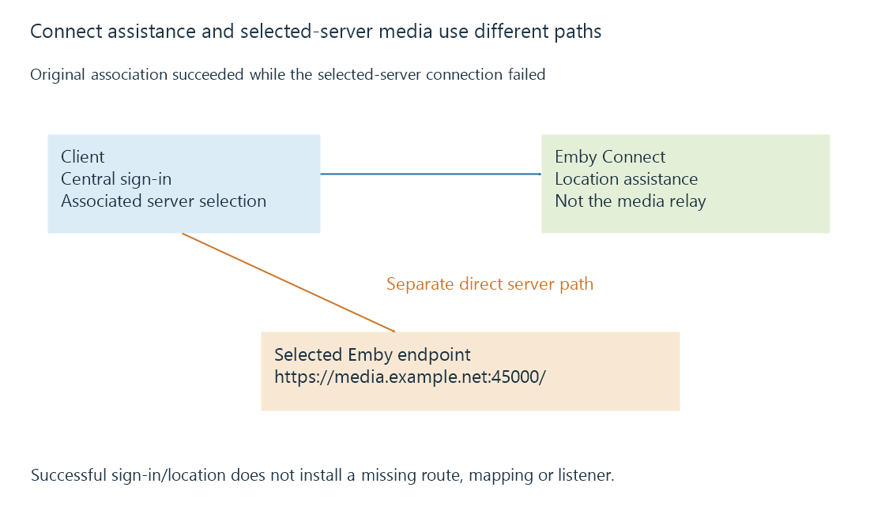

Emby Connect and the path to the selected server
Emby Connect associates a central sign-in with permitted server accounts and helps clients locate the selected server, while media connections still use the server’s actual reachable endpoint.
Emby Connect lets a user use a central sign-in and locate servers whose local accounts have been associated with that user.
The server’s media still needs a reachable connection path. Connect sign-in and playback are separate operations.
Location assistance and media delivery have different destinations
Emby’s documentation states that client connections go directly to the Emby server rather than passing the media through Emby Connect.

That explains an otherwise puzzling result: the Connect service can be reachable while a particular household server is not.
The server can be powered off, advertise an outdated endpoint or sit behind a missing inbound mapping. Successfully obtaining its location does not resolve those path failures.
A candidate is not a completed connection
Use this original reduced state model:
{
"connectSignInSucceeded": true,
"serverAssociationFound": true,
"candidate": {"serverId": "learn-server-A", "url": "https://media.example.net:45000/"},
"serverConnectionSucceeded": false
}
These fields are explanatory rather than a native Connect API response. The fictional hostname was not queried.
The first two successes establish the association stage. The false final condition belongs to the selected server’s connection path.
DNS, port forwarding and CGNAT explain distinct reasons that path can remain unavailable.
The server’s local user relationship still matters
The server administrator associates a Connect username with a local server account. That account’s server-side access remains a separate relationship from the central username.
A central sign-in does not make every listed server’s library accessible without its intended account/permissions. Removing or changing the local association can also change access while the Connect identity remains the same.
The documentation recommends retaining a local account password as part of the account setup. This page explains the relationship rather than changing any account.
Server identity can survive endpoint changes
A friendly name is a display label. An endpoint can change after address allocation or network configuration changes. The intended server identity can remain stable through both.
A client holding an old candidate can therefore need updated location information while the user’s server association is still valid.
Local discovery supplies another location mechanism in its network scope. Connect supplies central assistance for the associated servers; neither candidate alone proves the later media service request succeeded.
See Also
- Emby server discovery and advertised endpoints
- Dynamic DNS and a changing server address
- Carrier-grade NAT and control of inbound mappings
- Local and remote connections to Emby